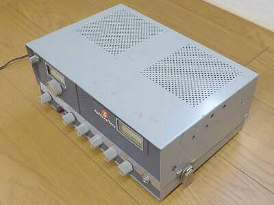
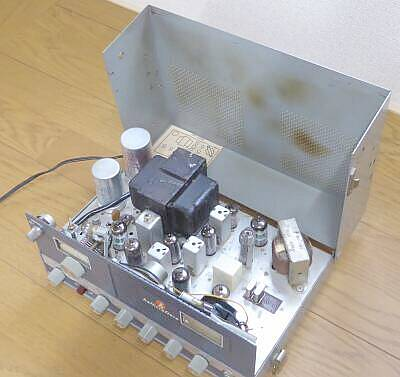
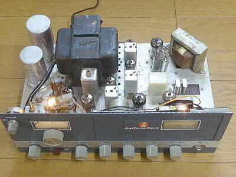
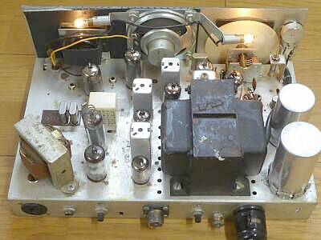
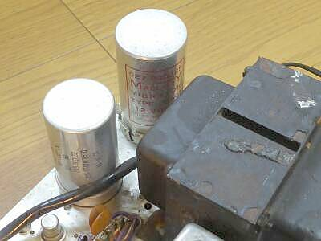
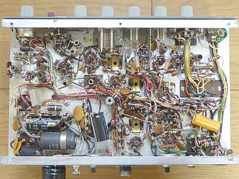
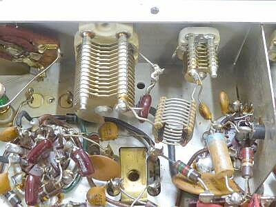
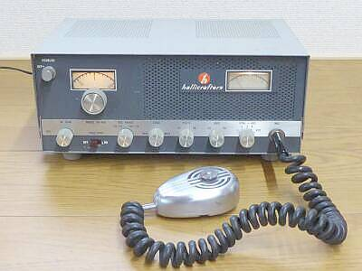

 |
全体を見るとこのようになっています
横のパッチン錠に注目 |
 |
サイド面のパッチン錠を外すと、このように上ケースが開きます
真空管の配置記したペーパーが上ケース内側に貼ってあります
このまま上ケースを取り外すこともできます
こういう構造なら、フロント・パネルにクリスタル・ソケットを用意する必要はなさそうです |
 |
上ケースを外して正面から
シャーシ左下、ブロックコンデンサの下にニュービスタ（１３ＣＷ４）が見えます／小さい金属キャップのよう）
受信は、そこから右に信号が流れ、中央がＩＦ段
奥のＩＦＴの向こうに検波・ノイズリミッタの１２ＡＬ５、そしてその右がＡＦ段で、１２ＡＴ７と１２ＡＱ５です
リレーの横にクリスタル・ソケットが用意されています
ＨＥ-４５Ｂでは、ＦＴ-２４３型でしたが、本機はＣＲ-２３／ｕ（ＨＣ-６／ｕ・ＨＣ-４８／Ｕ）です |
 |
上ケースを外して背面より
スピーカーの手前に見えるのが送信ファイナル７５５１です
その左に見える７０５９（６ＥＡ８の１２Ｖ管）で発振と２逓倍しています
hallicraftersは、７０５９がお好きで、真空管にもhallicraftersのプリントがなされています
シンプルに１２Ｖ管を使おう・・・でしょう（１３ＣＷ４というのも初めて目にしました、普通は６ＣＷ４ですもの） |
 |
この時代のＤＣ-ＤＣ対応は、バイブレーター方式
奥側がそのものです（手前は平滑用ブロック・コンデンサ） |
 |
シャーシ下の様子
整然と配線されています
高周波的には、よく考えられており、必要なシールド板もきちんと配されています
３５０Ｖ５０μＦの電解コンデンサを追加しました（容量抜けでハムがひどい） |
 |
送信終段部
右端に見えるシールド板は、ファイナルの７５５１のソケットの真ん中に使われているもの
タンクコイルは、エアーダックス
小型ＶＣがプレート同調用
大型ＶＣがロード調整用
πマッチです |
 |
入手した本機
マイク・ジャックは、φ６より一回り細い通信プラグ（ＰＪ-０６８）に対応したもの・・・とりあえず、手持ちのＭＭ-１（Ｃｏｌｌｉｎｓ）を流用しました
このジャックがオリジナルかどうかは？？？です
写真等のイメージでは、heath-kitが良く使っていた、Amphenol 80MC2M ではないかと思うのですが・・・
どちらにしても、一般的ではありません |
|
まず、入手時点で受信感度が悪い
全く聞こえないわけではありませんが、５μＶの信号でＳ／Ｎ１０ｄｂとれるかどうか
どうもＲＦアンプの周りに問題がありそうということで、チェックを開始
ＡＮＴコイル周りの常数を変更して、きちんと同調がとれるようにしたところ、見事感度がとれるようになりました。
帯域幅を狭く（１ＭＨｚ幅）調整すれば、０．５μＶで、Ｓ／Ｎ１０ｄｂが得られました
が、せっかくの４ＭＨｚカバーですので、ある程度均等に調整し、０．７μＶ入力でＳ／Ｎ１０ｄｂがとれるように全体調整しました
ここで次の問題に
受信Ｓメータの振れが極端に悪い・・・・感度そのものは取れているのですが、信号レベルが上がってもＳメータがあるところから振れません
せいぜいＳ８程度まで・・・聞こえれば良い、で済ませばいいのですが、せっかくですからここはもう一歩・・・
メーター回路を確認したところ、ＩＦ管（１２ＢＡ６）のプレート電圧（電流）の変化を見ているようですので、これは真空管に問題（劣化）があるのではないと疑い、２本を新品に交換
これできちんと信号強度に応じてＳメータも振れるようになりました
感度のチェックだけでは、見落とすところでした
安定度について
ＡＭであれば十分と思える安定さです
オシレータには、ツェナー・ダイオードで安定化させた１２０Ｖが供給されています
メイン・ダイヤルについて
この時代は、１／６に落とす、いわゆるバーニア機構の採用がほとんどです
本機もそうなのですが、ＣＲＣなど下手な注油は空回りの元になります
一度掃除してシリコン・グリスを塗布しましたが、まだ時に空回りを感じます・・・なじんでくれればいいのですが
送信は、ハムがひどかったくらいで、平滑コンデンサ追加対応でほかに問題はありませんでした
クリスタルは、２逓倍・・・２５MHｚ台のものを使用します
もしかしたら、こちらのAMECO ＶＦＯがそのまま使えるのではないかと思います
いやらしいのはマイク・ジャック
交換しようかとも思ったのですが、合うマイクを持っていたので、そのままにしています
2024.04 純正マイクロホンが入手できたので、手元にあったオリジナルのコネクタに戻しました
最後に、ＳＲ-４６との違いですが、メイン・ダイヤル左上のＳＱの追加だけのようです |